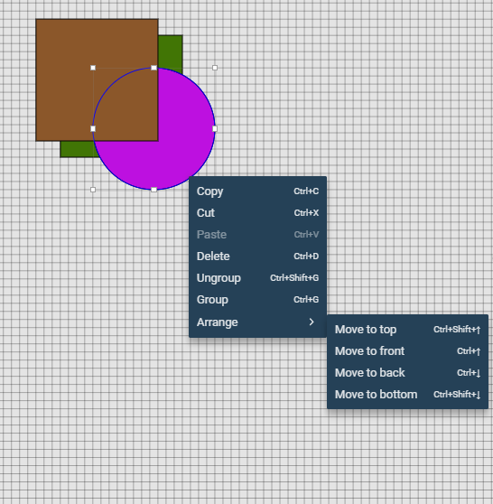
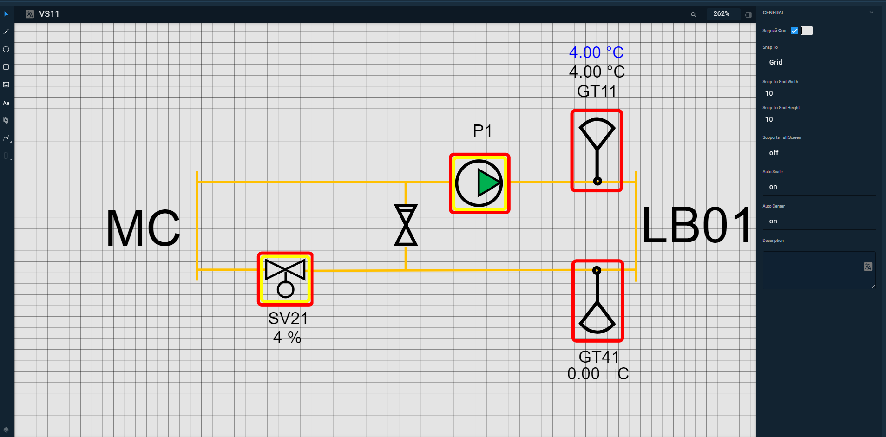

Pages are the main visual component of ControlMachines™ HMI. You can view pages both in HMI View and Portal. A typical page contains different elements that display information related to project functioning. It can be schemes, tables, images and many more.
The Page editor is a part of ControlMachines™ HMI IDE that allows you to create and edit pages.
The editor is available in the View pages menu. Choose a page and click the edit button and start making changes. Click the button Create new page to start editing a new page.
Place elements and configure their attributes. You can pick several elements with the mouse by holding the left mouse button or ctrl button on the keyboard. Hold the alt button to rotate graphic elements.
Press Spacebar and hold the page with the left mouse button to drag it in different directions. Scroll to change the zoom level.
Pages support layers. You can place objects in front and behind others. There are two ways to arrange an object's position:
Context menu
Select an element, right-click, and choose Arrange

Figure 1. Arrange menu
Keyboard combinations
Use the following combinations:
Click the edit button to start working with a page. The editor has the following view.

Figure 2. Page editor view
The editor consists of three main parts:
Left Panel
Content Area or Canvas
Right Panel
Page elements are on the Left Panel. Using these elements you can draw schemes and other visual objects. The Content Area represents the page itself. This is the area, where you can put elements from the Left panel. The Right Panel contains properties related to the element or the page.
The bar above the Content area consists of the fields Page Name and Search, and the buttons Zoom and Close Right Panel. In the Page Name field, you can set the page's name. Click the Localization button to the menu that allows you to set the page name in available languages.
Figure 3. Localization menu
Note
If the page name translation is not set, HMI View displays the default page name.
Type the page element's name or its part to find it in the Search field. Set the page's display scale by clicking the Zoom button. The Close Right Panel button toggles the Right Panel.
Parent article:
IDE overview
An overview of ControlMachines™ HMI project development component.
Related articles:
Pages
In this article, you can find brief information about pages, how to add a page to Favorites and how to rename it.
Key combinations
Find keyboard shortcuts that would help to make your work faster and more comfortable.
 to start working with a page. The editor has the following view.
to start working with a page. The editor has the following view.